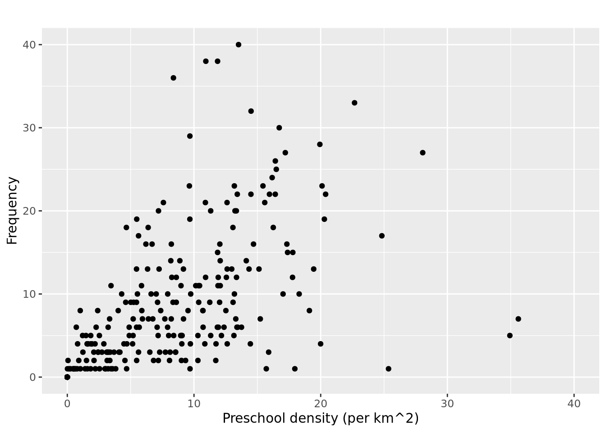

# install.packages("pacman")Hands-On Exercise 1
hands_on_exercise
Geospatial Data Science with R
1 Overview
Geospatial Data Science is the process of importing, wrangling, integrating, and processing geographically referenced data sets.
In this exercise, I will learn how to load data sets and perform basic data science tasks with R.
1.1 Data acquisition
Data is key to data analytics, including geospatial analytics. Hence, before analysing, I will acquire the necessary data sets from the following sources:
- Master Plan 2014 Subzone Boundary (Web) from data.gov.sg
- Pre-Schools Location from data.gov.sg
- Cycling Path from LTADataMall
- Latest version of Singapore Airbnb listing data from Inside Airbnb
1.2 R language setup
In this exercise, two R packages will be mainly used for analysis. They are:
sffor importing, managing, and processing geospatial data, andtidyversefor performing data science tasks such as importing, wrangling and visualising data
In general, packages can be installed using the install.packages function provided by base R. Later on, packages can also be installed via pacman as well.
The tidyverse package consists of a family of R packages. In this exercise, the following packages will be used:
readrfor importing csv data,readxlfor importing Excel worksheet,tidyrfor manipulating data,dplyrfor transforming data, andggplot2for visualising data
The packages can be installed and loaded using the code chunk below.
pacman::p_load(sf, tidyverse)2 Geospatial data
2.1 Importing geospatial data
In this section, the following geospatial data will be imported into R using the st_read function of the sf package:
MP14_SUBZONE_WEB_PL, a polygon feature layer in ESRI shapefile format,CyclingPath, a line feature layer in ESRI shapefile format, andPreSchool, a point feature layer in kml file format
2.1.1 Importing polygon feature data in shapefile format
The st_read function of the sf package can be used to import the MP14_SUBZONE_WEB_PL shapefile into R as a polygon feature data frame.
Note: when the input geospatial data is in shapefile format, two arguments will be used, namely:
dsnto define the data pathlayerto provide the shapefile name
Also note that no extension such as .shp, .dbf, .prj and .shx are needed.
find("st_read")[1] "package:sf"master_plan_subzone_boundary <- st_read(
dsn = "data/geospatial",
layer = "MP14_SUBZONE_WEB_PL"
)Reading layer `MP14_SUBZONE_WEB_PL' from data source
`/home/swoh/local/Y3S1-IS415/website/hands_on_exercises/exercise_1/data/geospatial'
using driver `ESRI Shapefile'
Simple feature collection with 323 features and 15 fields
Geometry type: MULTIPOLYGON
Dimension: XY
Bounding box: xmin: 2667.538 ymin: 15748.72 xmax: 56396.44 ymax: 50256.33
Projected CRS: SVY21From the ouput, we can learn that some interesting things about the data. It reveals that there are a total of 323 multipolygon features1 and 15 fields in the master_plan_subzone_boundary Simple Feature (sf) data frame. We can also note that the data is in the SVY212 coordinate system. There is also a bounding box which provides the x extend and y extend3 of the data.
2.1.2 Importing polyline feature data in shapefile form
Likewise, the CyclingPath shapefile can be imported in a similar manner.
cycling_path <- st_read(
dsn = "data/geospatial",
layer = "CyclingPathGazette"
)Reading layer `CyclingPathGazette' from data source
`/home/swoh/local/Y3S1-IS415/website/hands_on_exercises/exercise_1/data/geospatial'
using driver `ESRI Shapefile'
Simple feature collection with 3138 features and 2 fields
Geometry type: MULTILINESTRING
Dimension: XY
Bounding box: xmin: 11854.32 ymin: 28347.98 xmax: 42644.17 ymax: 48948.15
Projected CRS: SVY21The output shows that there are a total of 3138 multiline4 features and 2 fields. Similar to the previous data set, the data is in the SVY215 coordinate system.
2.1.3 Importing GIS data in kml format
The PreSchoolsLocation data is instead in the kml format. st_read can still be used to load the data, with a slight modification in usage.
Note: the complete path and the file extension has to be provided for the kml format.
preschool <- st_read(
"data/geospatial/PreSchoolsLocation.kml"
)Reading layer `PRESCHOOLS_LOCATION' from data source
`/home/swoh/local/Y3S1-IS415/website/hands_on_exercises/exercise_1/data/geospatial/PreSchoolsLocation.kml'
using driver `KML'
Simple feature collection with 2290 features and 2 fields
Geometry type: POINT
Dimension: XYZ
Bounding box: xmin: 103.6878 ymin: 1.247759 xmax: 103.9897 ymax: 1.462134
z_range: zmin: 0 zmax: 0
Geodetic CRS: WGS 84From the output, we can see that there are 2290 point6 features and 16 fields. Differing from the previous two data sets, it is in the WGS847 coordinate system.
2.2 Checking the content of a Simple Feature data frame
Data loaded into a Simple Feature (sf) data frame can be analysed using functions from the various packages.
2.2.1 st_geometry
Extraction of geometry can be done using the st_geometry function of the sf package. The function returns the geometry which consists of the spatial component of the data, representing shapes and locations but not their attribute data.
find("st_geometry")[1] "package:sf"st_geometry(master_plan_subzone_boundary)Geometry set for 323 features
Geometry type: MULTIPOLYGON
Dimension: XY
Bounding box: xmin: 2667.538 ymin: 15748.72 xmax: 56396.44 ymax: 50256.33
Projected CRS: SVY21
First 5 geometries:MULTIPOLYGON (((31495.56 30140.01, 31980.96 296...MULTIPOLYGON (((29092.28 30021.89, 29119.64 300...MULTIPOLYGON (((29932.33 29879.12, 29947.32 298...MULTIPOLYGON (((27131.28 30059.73, 27088.33 297...MULTIPOLYGON (((26451.03 30396.46, 26440.47 303...2.2.2 glimpse
Besides the functions provided by the sf package, other packages such as dplyr may be used as well. glimpse is a function from dplyr provides a report, showing the data types of each field.
find("glimpse")[1] "package:dplyr" "package:tibble"glimpse(master_plan_subzone_boundary)Rows: 323
Columns: 16
$ OBJECTID <int> 1, 2, 3, 4, 5, 6, 7, 8, 9, 10, 11, 12, 13, 14, 15, 16, 17, …
$ SUBZONE_NO <int> 1, 1, 3, 8, 3, 7, 9, 2, 13, 7, 12, 6, 1, 5, 1, 1, 3, 2, 2, …
$ SUBZONE_N <chr> "MARINA SOUTH", "PEARL'S HILL", "BOAT QUAY", "HENDERSON HIL…
$ SUBZONE_C <chr> "MSSZ01", "OTSZ01", "SRSZ03", "BMSZ08", "BMSZ03", "BMSZ07",…
$ CA_IND <chr> "Y", "Y", "Y", "N", "N", "N", "N", "Y", "N", "N", "N", "N",…
$ PLN_AREA_N <chr> "MARINA SOUTH", "OUTRAM", "SINGAPORE RIVER", "BUKIT MERAH",…
$ PLN_AREA_C <chr> "MS", "OT", "SR", "BM", "BM", "BM", "BM", "SR", "QT", "QT",…
$ REGION_N <chr> "CENTRAL REGION", "CENTRAL REGION", "CENTRAL REGION", "CENT…
$ REGION_C <chr> "CR", "CR", "CR", "CR", "CR", "CR", "CR", "CR", "CR", "CR",…
$ INC_CRC <chr> "5ED7EB253F99252E", "8C7149B9EB32EEFC", "C35FEFF02B13E0E5",…
$ FMEL_UPD_D <date> 2014-12-05, 2014-12-05, 2014-12-05, 2014-12-05, 2014-12-05…
$ X_ADDR <dbl> 31595.84, 28679.06, 29654.96, 26782.83, 26201.96, 25358.82,…
$ Y_ADDR <dbl> 29220.19, 29782.05, 29974.66, 29933.77, 30005.70, 29991.38,…
$ SHAPE_Leng <dbl> 5267.381, 3506.107, 1740.926, 3313.625, 2825.594, 4428.913,…
$ SHAPE_Area <dbl> 1630379.27, 559816.25, 160807.50, 595428.89, 387429.44, 103…
$ geometry <MULTIPOLYGON [m]> MULTIPOLYGON (((31495.56 30..., MULTIPOLYGON (…2.2.3 head
Base R also provides functions such as head which works similarly to its counterpart in python’s pandas library.
Note: the variable n can be used to specify the number of rows to look at.
find("head")[1] "package:utils"head(master_plan_subzone_boundary, n = 5)Simple feature collection with 5 features and 15 fields
Geometry type: MULTIPOLYGON
Dimension: XY
Bounding box: xmin: 25867.68 ymin: 28369.47 xmax: 32362.39 ymax: 30435.54
Projected CRS: SVY21
OBJECTID SUBZONE_NO SUBZONE_N SUBZONE_C CA_IND PLN_AREA_N
1 1 1 MARINA SOUTH MSSZ01 Y MARINA SOUTH
2 2 1 PEARL'S HILL OTSZ01 Y OUTRAM
3 3 3 BOAT QUAY SRSZ03 Y SINGAPORE RIVER
4 4 8 HENDERSON HILL BMSZ08 N BUKIT MERAH
5 5 3 REDHILL BMSZ03 N BUKIT MERAH
PLN_AREA_C REGION_N REGION_C INC_CRC FMEL_UPD_D X_ADDR
1 MS CENTRAL REGION CR 5ED7EB253F99252E 2014-12-05 31595.84
2 OT CENTRAL REGION CR 8C7149B9EB32EEFC 2014-12-05 28679.06
3 SR CENTRAL REGION CR C35FEFF02B13E0E5 2014-12-05 29654.96
4 BM CENTRAL REGION CR 3775D82C5DDBEFBD 2014-12-05 26782.83
5 BM CENTRAL REGION CR 85D9ABEF0A40678F 2014-12-05 26201.96
Y_ADDR SHAPE_Leng SHAPE_Area geometry
1 29220.19 5267.381 1630379.3 MULTIPOLYGON (((31495.56 30...
2 29782.05 3506.107 559816.2 MULTIPOLYGON (((29092.28 30...
3 29974.66 1740.926 160807.5 MULTIPOLYGON (((29932.33 29...
4 29933.77 3313.625 595428.9 MULTIPOLYGON (((27131.28 30...
5 30005.70 2825.594 387429.4 MULTIPOLYGON (((26451.03 30...2.3 Plotting geospatial data
Beyond looking at the numbers, we are also interested in visualising the features in a visual form. R’s built-in graphics package provides a handy plot function to view all of the data at together.
Note: the variable max.plot can be used to set the number of attributes to plot.
find("plot")[1] "package:graphics" "package:base" plot(master_plan_subzone_boundary, max.plot = 15)By default, it will create a multi-plot of all the attributes provided. We can also choose the specific parts to plot such as the geometry as shown below.
plot(st_geometry(master_plan_subzone_boundary))If we instead want to plot a specific attribute, attributes can also be indexed via their keys directly.
plot(master_plan_subzone_boundary["PLN_AREA_N"])2.4 Projection
When dealing with geospatial data, we also want to obtain the map projection. Since data may not be in the same coordinate system (e.g. SVY21 vs WGS84), we need to project the different geospatial data before comparison.
The process of transforming the data from one coordinate system to another is known as projection transformation.
2.4.1 EPSG code
Sometimes, data such as the coordinate system of the source data may be missing, due to missing files or wrong assignments during importing.
In order to standardize between the different coordinate systems, the European Petroleum Survey Group (EPSG), created and manages codes. The codes allow for easier transformation between the coordinate systems. For example, EPSG:4326 represents WGS84 while EPSG:3414 represents SVY21. Other ESPG codes can be found here.
We can use st_crs to look at the coordinate system specified in the data frame.
find("st_crs")[1] "package:sf"st_crs(master_plan_subzone_boundary)Coordinate Reference System:
User input: SVY21
wkt:
PROJCRS["SVY21",
BASEGEOGCRS["SVY21[WGS84]",
DATUM["World Geodetic System 1984",
ELLIPSOID["WGS 84",6378137,298.257223563,
LENGTHUNIT["metre",1]],
ID["EPSG",6326]],
PRIMEM["Greenwich",0,
ANGLEUNIT["Degree",0.0174532925199433]]],
CONVERSION["unnamed",
METHOD["Transverse Mercator",
ID["EPSG",9807]],
PARAMETER["Latitude of natural origin",1.36666666666667,
ANGLEUNIT["Degree",0.0174532925199433],
ID["EPSG",8801]],
PARAMETER["Longitude of natural origin",103.833333333333,
ANGLEUNIT["Degree",0.0174532925199433],
ID["EPSG",8802]],
PARAMETER["Scale factor at natural origin",1,
SCALEUNIT["unity",1],
ID["EPSG",8805]],
PARAMETER["False easting",28001.642,
LENGTHUNIT["metre",1],
ID["EPSG",8806]],
PARAMETER["False northing",38744.572,
LENGTHUNIT["metre",1],
ID["EPSG",8807]]],
CS[Cartesian,2],
AXIS["(E)",east,
ORDER[1],
LENGTHUNIT["metre",1,
ID["EPSG",9001]]],
AXIS["(N)",north,
ORDER[2],
LENGTHUNIT["metre",1,
ID["EPSG",9001]]]]The output shows that the data frame was projected to be in the SVY21 coordinate system, yet the EPSG codes at the bottom shows the wrong EPSG code of 9001, when we know that the correct code should be 3414.
To fix it, we can set the EPSG code manually, using the st_set_crs function.
find("st_set_crs")[1] "package:sf"master_plan_subzone_boundary_3414 <- st_set_crs(master_plan_subzone_boundary, 3414)Warning: st_crs<- : replacing crs does not reproject data; use st_transform for
thatst_crs(master_plan_subzone_boundary_3414)Coordinate Reference System:
User input: EPSG:3414
wkt:
PROJCRS["SVY21 / Singapore TM",
BASEGEOGCRS["SVY21",
DATUM["SVY21",
ELLIPSOID["WGS 84",6378137,298.257223563,
LENGTHUNIT["metre",1]]],
PRIMEM["Greenwich",0,
ANGLEUNIT["degree",0.0174532925199433]],
ID["EPSG",4757]],
CONVERSION["Singapore Transverse Mercator",
METHOD["Transverse Mercator",
ID["EPSG",9807]],
PARAMETER["Latitude of natural origin",1.36666666666667,
ANGLEUNIT["degree",0.0174532925199433],
ID["EPSG",8801]],
PARAMETER["Longitude of natural origin",103.833333333333,
ANGLEUNIT["degree",0.0174532925199433],
ID["EPSG",8802]],
PARAMETER["Scale factor at natural origin",1,
SCALEUNIT["unity",1],
ID["EPSG",8805]],
PARAMETER["False easting",28001.642,
LENGTHUNIT["metre",1],
ID["EPSG",8806]],
PARAMETER["False northing",38744.572,
LENGTHUNIT["metre",1],
ID["EPSG",8807]]],
CS[Cartesian,2],
AXIS["northing (N)",north,
ORDER[1],
LENGTHUNIT["metre",1]],
AXIS["easting (E)",east,
ORDER[2],
LENGTHUNIT["metre",1]],
USAGE[
SCOPE["Cadastre, engineering survey, topographic mapping."],
AREA["Singapore - onshore and offshore."],
BBOX[1.13,103.59,1.47,104.07]],
ID["EPSG",3414]]Notice that the EPSG code is correctly set to 3414 now.
2.4.2 Transforming from WGS84 to SVY21
Comparing WGS84 and SVY21, WGS84 is a geographic coordinate system which is meant for worldwide usage and uses the shape and origin of the Earth itself to define its coordinates. On the other hand, SVY21 is of a projected coordinate system which translates the area onto a flat plane.
Transformation to a projected coordinate system is required if the analysis requires distance and / or area measurements.
We will perform this on the preschool data set. Firstly, we take a look at what the preschool data set contains.
st_geometry(preschool)Geometry set for 2290 features
Geometry type: POINT
Dimension: XYZ
Bounding box: xmin: 103.6878 ymin: 1.247759 xmax: 103.9897 ymax: 1.462134
z_range: zmin: 0 zmax: 0
Geodetic CRS: WGS 84
First 5 geometries:POINT Z (103.8072 1.299333 0)POINT Z (103.826 1.312839 0)POINT Z (103.8409 1.348843 0)POINT Z (103.8048 1.435024 0)POINT Z (103.839 1.33315 0)As it is in the WGS84 geographic coordinate system, we are looking to transform it into the SVY22 projected coordinate system. To do this, we can use st_transform to project it from one coordinate system to another, Mathematically.
Note: st_set_crs is not appropriate as it only sets the coordinate system attribute, but does not transform the data itself.
preschool_3414 <- st_transform(
preschool,
crs = 3414
)
st_geometry(preschool_3414)Geometry set for 2290 features
Geometry type: POINT
Dimension: XYZ
Bounding box: xmin: 11810.03 ymin: 25596.33 xmax: 45404.24 ymax: 49300.88
z_range: zmin: 0 zmax: 0
Projected CRS: SVY21 / Singapore TM
First 5 geometries:POINT Z (25089.46 31299.16 0)POINT Z (27189.07 32792.54 0)POINT Z (28844.56 36773.76 0)POINT Z (24821.92 46303.16 0)POINT Z (28637.82 35038.49 0)3 Aspatial data
Aspatial data differs from geospatial data in that it is instead pieces of data that contains snippets of geospatial data. For example, the listings data set contains two fields that capture the x and y coordinates of the data points.
3.1 Importing the aspatial data
Since the listings data set is in csv file format, we can use the read_csv function from the readr package to import the data. The data will be imported as a tibble data frame, which is different from the SF data frames we used in the previous examples.
We then use the list function from Base R to view the data.
find("read_csv")[1] "package:readr"listings <- read_csv(
"data/aspatial/listings.csv",
show_col_types = FALSE
)
find("list")[1] "package:base"list(listings)[[1]]
# A tibble: 3,540 × 18
id name host_id host_name neighbourhood_group neighbourhood latitude
<dbl> <chr> <dbl> <chr> <chr> <chr> <dbl>
1 71609 Ensuite … 367042 Belinda East Region Tampines 1.35
2 71896 B&B Roo… 367042 Belinda East Region Tampines 1.35
3 71903 Room 2-n… 367042 Belinda East Region Tampines 1.35
4 275343 10min wa… 1439258 Kay Central Region Bukit Merah 1.29
5 275344 15 mins … 1439258 Kay Central Region Bukit Merah 1.29
6 289234 Booking … 367042 Belinda East Region Tampines 1.34
7 294281 5 mins w… 1521514 Elizabeth Central Region Newton 1.31
8 324945 Comforta… 1439258 Kay Central Region Bukit Merah 1.29
9 330095 Relaxing… 1439258 Kay Central Region Bukit Merah 1.29
10 344803 Budget s… 367042 Belinda East Region Tampines 1.35
# ℹ 3,530 more rows
# ℹ 11 more variables: longitude <dbl>, room_type <chr>, price <dbl>,
# minimum_nights <dbl>, number_of_reviews <dbl>, last_review <date>,
# reviews_per_month <dbl>, calculated_host_listings_count <dbl>,
# availability_365 <dbl>, number_of_reviews_ltm <dbl>, license <chr>We can see that there are 3540 rows and 18 columns. The geospatial data can be seen in the latitude and longitude columns. Notice that both columns are in the the decimal degree format, which we will assume to be data using the WGS84 geographic coordinate system.
3.2 Conversion to Simple Feature data frame
The data can be converted into a SF data frame using the st_as_sf. We then convert it for the SVY21 coordinate system.
Note:
coordscan be used to specify the columns for coordinate datacrscan be used to specify the EPSG codes for conversion%>%is the pipe operator in R to chain functions, avoiding nesting
find("st_as_sf")[1] "package:sf"listings_sf <- st_as_sf(
listings,
coords = c("longitude", "latitude"),
crs = 4326
) %>%
st_transform(crs = 3414) %>%
glimpse()Rows: 3,540
Columns: 17
$ id <dbl> 71609, 71896, 71903, 275343, 275344, 28…
$ name <chr> "Ensuite Room (Room 1 & 2) near EXPO", …
$ host_id <dbl> 367042, 367042, 367042, 1439258, 143925…
$ host_name <chr> "Belinda", "Belinda", "Belinda", "Kay",…
$ neighbourhood_group <chr> "East Region", "East Region", "East Reg…
$ neighbourhood <chr> "Tampines", "Tampines", "Tampines", "Bu…
$ room_type <chr> "Private room", "Private room", "Privat…
$ price <dbl> NA, 80, 80, 50, 50, NA, 85, 65, 45, 54,…
$ minimum_nights <dbl> 92, 92, 92, 180, 180, 92, 92, 180, 180,…
$ number_of_reviews <dbl> 19, 24, 46, 20, 16, 12, 131, 17, 5, 60,…
$ last_review <date> 2020-01-17, 2019-10-13, 2020-01-09, 20…
$ reviews_per_month <dbl> 0.12, 0.15, 0.29, 0.15, 0.11, 0.08, 0.8…
$ calculated_host_listings_count <dbl> 6, 6, 6, 49, 49, 6, 7, 49, 49, 6, 7, 7,…
$ availability_365 <dbl> 89, 148, 90, 62, 0, 88, 365, 0, 0, 365,…
$ number_of_reviews_ltm <dbl> 0, 0, 0, 0, 2, 0, 0, 1, 1, 1, 0, 0, 0, …
$ license <chr> NA, NA, NA, "S0399", "S0399", NA, NA, "…
$ geometry <POINT [m]> POINT (41972.5 36390.05), POINT (…4 Geoprocessing
Now that we have the data imported, we can then perform some analysis, also known as geoprocessing or GIS analysis.
4.1 Buffering
Buffering is a defined zone or area created around or within a geographic feature, typically for highlighting the space around the feature.
For example, in the cycling_path data set, we have existing the cycling path. Planning to upgrade the path, we will need to scquire 5 metres of land on both sides of the path. How can we determine the area required?
Firstly, we can use st_buffer to compute the buffer itself around the path.
Note:
distcan be used to specify the buffer distancenQuadSegscan be used to specify the number of segments used to approximate a quarter of a circle. Used for approximating for rounded corners.
find("st_buffer")[1] "package:sf"cycling_path_buffer <- st_buffer(
cycling_path,
dist = 5,
nQuadSegs = 30
)The area can then be calculated using st_area, and sum.
Note: $ can be used to access columns of data frames directly
find("st_area")[1] "package:sf"find("sum")[1] "package:base"cycling_path_buffer$Area <- st_area(cycling_path_buffer)
sum(cycling_path_buffer$Area)2218855 [m^2]4.2 Point-in-polygon count
Point-in-polygon count refers to the number of points which fall within a given polygon. Referencing the preschool data set, let’s say we want to find the number of preschools in each Planning Subzone.
We first identify the preschools located in each Planning Subzone using st_intersects, and then use length to sum them up.
find("st_intersects")[1] "package:sf"find("lengths")[1] "package:base"master_plan_subzone_boundary_3414$"Preschool Count" <-
st_intersects(
master_plan_subzone_boundary_3414,
preschool_3414
) %>%
lengths()To display the information, we can use the summary function.
find("summary")[1] "package:base"summary(master_plan_subzone_boundary_3414$"Preschool Count") Min. 1st Qu. Median Mean 3rd Qu. Max.
0.00 0.00 4.00 7.09 10.00 72.00 We can also use the top_n function from the dplyr package if we are interested in the top few rows.
Warn: using ” does not seem to work when specifying the column. Usage of ` is required.
find("top_n")[1] "package:dplyr"top_n(
master_plan_subzone_boundary_3414,
1,
`Preschool Count`
)Simple feature collection with 1 feature and 16 fields
Geometry type: MULTIPOLYGON
Dimension: XY
Bounding box: xmin: 39655.33 ymin: 35966 xmax: 42940.57 ymax: 38622.37
Projected CRS: SVY21 / Singapore TM
OBJECTID SUBZONE_NO SUBZONE_N SUBZONE_C CA_IND PLN_AREA_N PLN_AREA_C
1 189 2 TAMPINES EAST TMSZ02 N TAMPINES TM
REGION_N REGION_C INC_CRC FMEL_UPD_D X_ADDR Y_ADDR SHAPE_Leng
1 EAST REGION ER 21658EAAF84F4D8D 2014-12-05 41122.55 37392.39 10180.62
SHAPE_Area geometry Preschool Count
1 4339824 MULTIPOLYGON (((42196.76 38... 72If we want to get the area of each planning subzone, we can also use st_area. Density can then be calculated using the mutate function.
find("st_area")[1] "package:sf"find("mutate")[1] "package:dplyr"master_plan_subzone_boundary_3414$Area <-
st_area(
master_plan_subzone_boundary
)
master_plan_subzone_boundary_3414 <-
mutate(
master_plan_subzone_boundary_3414,
`Preschool Density` = (`Preschool Count` / `Area`) * 1000000
)4.3 Exploratory Data Analysis (EDA)
Exploratory Data Analysis (EDA) aims to summarise and understand the main characteristics of a dataset, often with visuals. It is used to uncover patterns, anomalies, test hypotheses, making it an important part of data analysis.
With reference to the previously calcualted density for the preschool data set, let us visualise the data. We can use a histogram to reveal the distribution, using the hist function.
find("hist")[1] "package:graphics"hist(
master_plan_subzone_boundary_3414$"Preschool Density"
)While the graphics package does provide functions for simple graphs, we can also use the ggplot2 package to plot some more advanced and customisable graphs.
ggplot(
data = master_plan_subzone_boundary_3414,
aes(
x = as.numeric(`Preschool Density`)
)
) +
geom_histogram(
bins = 20,
color = "black",
fill = "orange"
) +
labs(
title = "Are preschools evenly distributed in Singapore?",
subtitle = "There are many planning subzones with a single preschool.\nOn the other hand, there are two planning subzones with at least 20 preschools.",
x = "Preschool density (per km^2)",
y = "Frequency"
)If we want to use a scatterplot instead, we can still use ggplot2 to do so.
ggplot(
data = master_plan_subzone_boundary_3414,
aes(
x = as.numeric(`Preschool Density`),
y = `Preschool Count`,
)
) +
geom_point(
color = "black",
fill = "orange"
) +
xlim(0, 40) +
ylim(0, 40) +
labs(
title = "",
x = "Preschool density (per km^2)",
y = "Frequency"
)Warning: Removed 2 rows containing missing values or values outside the scale range
(`geom_point()`).
Footnotes
Multipolygon features: represents geographic areas consisting of multiple polygons. Useful for representing complex or irregularly shaped regions.↩︎
SVY21: Singapore Vital Years 21st Century, a projected coordinate system primarily used for mapping data in Singapore.↩︎
Extend: difference between minimum and maximum coordinates, a.k.a. distance or length.↩︎
Multiline features: represents multiple line segments or paths. Typically used for linear features such as roads and rivers.↩︎
SVY21: Singapore Vital Years 21st Century, a projected coordinate system primarily used for mapping data in Singapore.↩︎
Point features: represents point on a region of area, useful for landmarking items on a map.↩︎
WGS84: World Geodetic System 1984, a geographic coordinate system used to define a global reference frame for the Earth. Used for mapping geographic locations worldwide.↩︎